Uma lâmina de mama corada em H&E tem dezenas de milhares de pixels de lado. A pipeline a reduz, em cinco estágios, a um texto curto que um modelo de linguagem pequeno, rodando localmente, transforma num rascunho de pré-laudo; uma etapa nova decide a classe da lâmina inteira. Abaixo, cada estágio com o que faz, o que foi testado e o que os números mostram.
Todo teste tem regra e critério de sucesso fixados e registrados em commit antes de rodar, e é avaliado em lâminas que o método não viu.
| Conjunto | O que é | Uso |
|---|---|---|
| BRACS | 547 lâminas de mama, 4.537 regiões anotadas em 7 classes (N, PB, UDH, FEA, ADH, DCIS, IC) | 18 lâminas de desenvolvimento, 61 da validação oficial e 57 do teste oficial; 3.655 regiões de treino para treinar o descritor |
| BACH | Imagens de microscopia de outra instituição (Porto): 100 in situ, 100 invasivo | teste de generalização |
| NuCLS | 1.744 campos de mama do TCGA, ~59 mil núcleos classificados por patologista | validar a segmentação de núcleos |
Separa tecido de fundo branco pela saturação da cor (limiar de Otsu e operações morfológicas). Só patches com pelo menos 50% de tecido seguem.
A exceção (38%) é uma lâmina normal em que a caixa retangular da anotação envolve muito estroma claro em volta de um lóbulo pequeno.
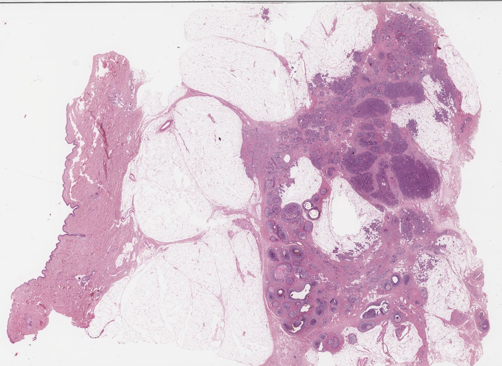
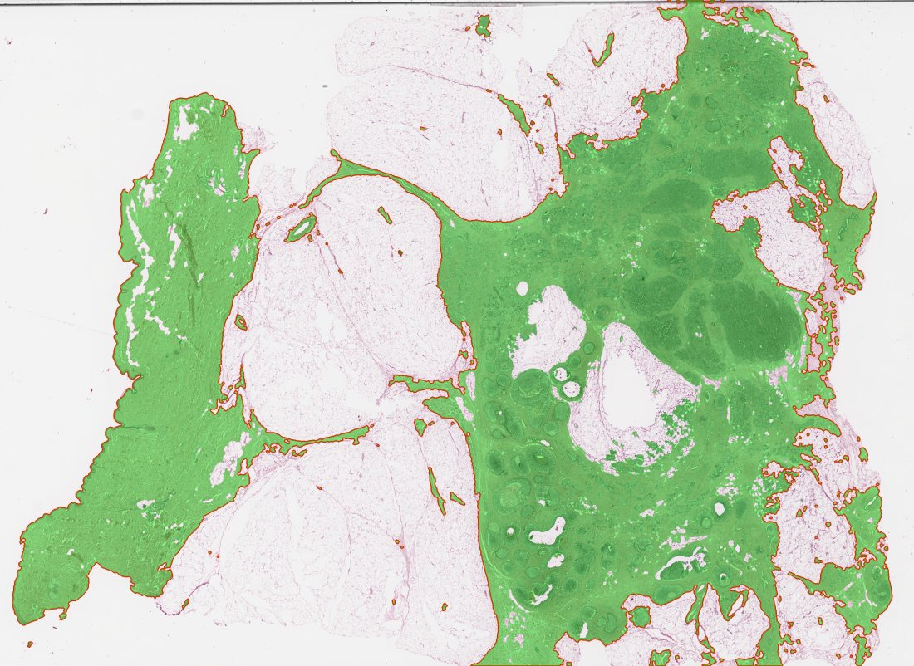
BRACS_748 patches no nível de 40x: 41.001 patches com ≥ 50% tecido: 15.138 (descarta 63% da área) regiões anotadas cobertas: 98 de 98 (cobertura média 96%)
Descrever milhares de patches geraria texto demais. O roteador pontua cada patch e escolhe os 32 mais relevantes, mantendo pelo menos 192 µm entre eles para não ficarem todos no mesmo foco.
Medido pelas regiões anotadas, o roteador parecia fraco (precisão ~0,2), porque as anotações não marcam toda a lesão. Contando os núcleos tumorais de cada patch escolhido, sem depender das anotações, ele funciona bem nas lâminas malignas.
Em lâminas benignas e atípicas ainda não há uma métrica boa para o roteador.
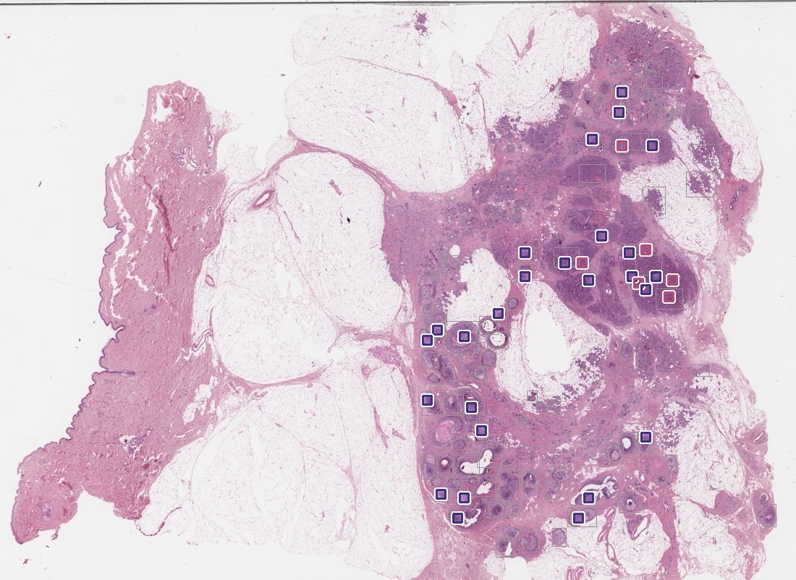
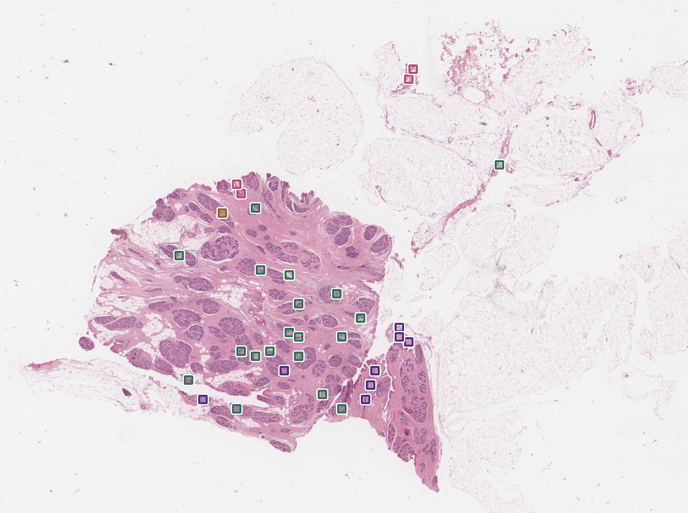
Em vez de só os 32 patches mais suspeitos, um pacote com número fixo de cada classe: 8 benignos, 6 atípicos, 6 DCIS e 6 carcinoma invasivo, os de maior confiança em cada uma. Três versões da evidência são comparadas nas 61 lâminas de validação, com o modelo de linguagem decidindo:
BRACS_748 · 15.138 candidatos → 32 escolhidos pontuação = sim(frase suspeita) − sim(frase benigna) distância mínima entre patches: 192 µm patches escolhidos com tumor (≥ 20 núcleos): roteador por frases 0,97 sorteio 0,24
Transforma cada patch escolhido em texto. É o estágio com mais testes, porque é onde a separação entre benigno, atípico, DCIS e carcinoma invasivo acontece.
Primeiro a categoria (benigno, atípico, maligno); se maligno, DCIS ou carcinoma invasivo. Uma tabela fixa transforma o resultado em texto:
[94720,22016] (maligno 1.00) invasive carcinoma 0.98
passou: 55,8% contra 42,3% das frasesO mesmo embedding do QuiltNet que fica no acaso com frases chega a 0,83–0,95 com uma camada treinada: a informação estava na imagem; o que falhava era a comparação com texto.
Só o UNI2-h mantém o desempenho fora da instituição de origem. O QuiltNet parecia bom no BRACS, mas aprendeu algo específico daquelas lâminas.
| Método | Benigno | Atípico | DCIS | IC | Média |
|---|---|---|---|---|---|
| Hierarquia com frases | 57% | 46% | 16% | 50% | 42,3% |
| Hierarquia com UNI2-h | 58% | 14% | 78% | 74% | 55,8% |
O ganho vem dos malignos. O atípico é o ponto fraco: há pouco dado de treino (972 patches, quase todos de 3 lâminas).
A mesma hierarquia, agora treinada com as regiões de treino do BRACS (23.669 patches de 3.402 regiões, até 16 por região) em vez dos patches de 18 lâminas. O atípico ganha muito mais exemplos: FEA 624 e ADH 387 regiões.
| Acerto por patch, nas 312 regiões de validação (rótulo oficial) | Benigno | Atípico | Maligno |
|---|---|---|---|
| Descritor das regiões | 84% | 35% | 90% |
| Com negativos benignos | 88% | 37% | 87% |
Agrupamento antigo (UDH em atípico): no teste externo, o atípico passou de 1 para 10 de 24 lâminas; com o rótulo oficial, a mesma regra acerta 5 de 17, porque parte do ganho vinha das lâminas UDH. O custo: o descritor marca patches como DCIS ou carcinoma invasivo também em lâminas benignas (por exemplo, 115 de 2.000 patches "invasivos" numa lâmina benigna da validação).
| CellViT original | Treinado no NuCLS | |
|---|---|---|
| Núcleos encontrados | 82–93% | |
| Tumor: sensibilidade / valor preditivo | 0,46 / 0,86 | 0,83 / 0,88 |
| Estroma: sensibilidade / valor preditivo | 0,80 / 0,44 | 0,72 / 0,52 |
| Medida vs. anotação (Spearman) | 0,28 | 0,35 |
Medidas mais robustas (distância mediana ao estroma; contato com 3 vizinhos) também ficaram entre 0,27 e 0,37. Decisão: os núcleos servem como sinal, mas o número não vai para o texto do laudo.
| Trocar frases uma a uma | não se repetiu em lâminas novas |
| Ensemble de frases | DCIS × IC 0,54–0,57 |
| Média com os 8 patches vizinhos | +3 pontos, só no IC |
| Tipo de tecido em volta do patch | relação invertida |
| "Tumor cercado de tumor → IC" | passou, efeito fraco (~55%) |
| UNI2-h + núcleos juntos | não acrescenta |
| Contornos oficiais das anotações | a maioria é retângulo |
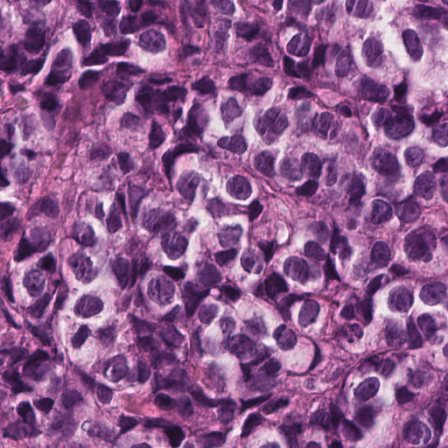
(maligno 1.00) ductal carcinoma in situ 0.99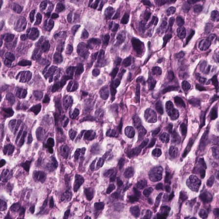
(maligno 1.00) invasive carcinoma 0.98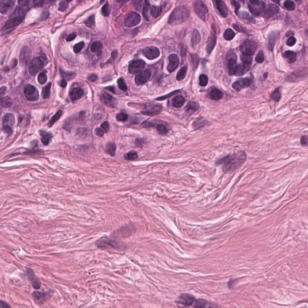
(benigno 1.00) benign tissue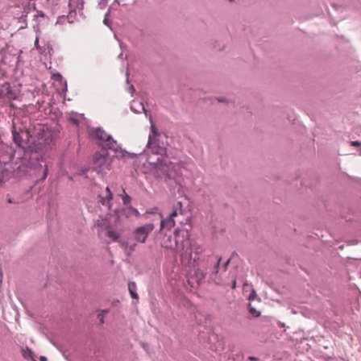
(maligno 1.00) invasive carcinoma 1.00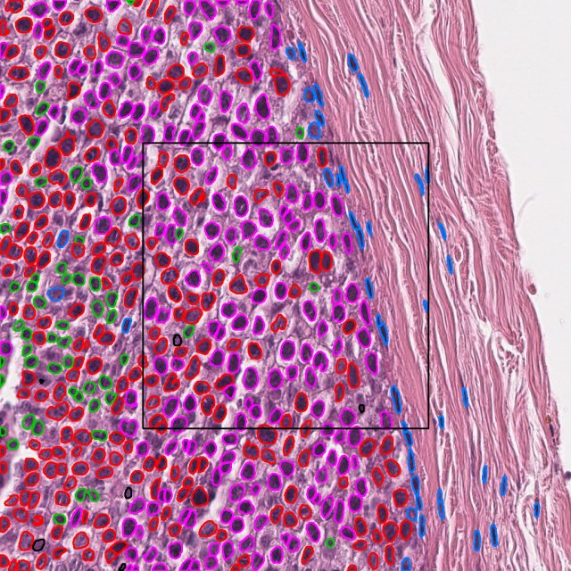
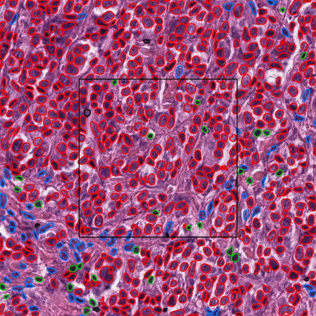
BRACS_748 · 32 patches descritos [96256,41984] (maligno 1.00) ductal carcinoma in situ 0.99 [94720,22016] (maligno 1.00) invasive carcinoma 0.98 [71680,61952] (maligno 1.00) ductal carcinoma in situ 1.00 [102400,42496] (maligno 1.00) invasive carcinoma 0.85 [98304,37888] (maligno 1.00) invasive carcinoma 1.00 … categorias: maligno 32 · DCIS 26 · carcinoma invasivo 6
Etapa nova. Em vez de o modelo de linguagem decidir a classe a partir de 32 patches, um classificador usa até 2.000 patches de cada lâmina: 12 números (frações por classe, médias e percentis altos das probabilidades) entram numa regressão logística treinada com o rótulo de 79 lâminas. O modelo de linguagem passa a só redigir.
Em vez de passar pelo descritor de cada patch, um modelo de MIL com atenção (Ilse et al., 2018) recebe os embeddings do UNI2-h dos 2.000 patches e aprende a classe com o rótulo de 79 lâminas. A atenção indica quais patches pesaram na decisão.
| Nas 57 lâminas | Benigno | Atípico | DCIS | IC | Total | Acurácia balanceada |
|---|---|---|---|---|---|---|
| Classificador + negativos | 10/20 | 6/17 | 2/8 | 11/12 | 29/57 | 0,505 |
| MIL com atenção | 15/20 | 10/17 | 2/8 | 11/12 | 38/57 | 0,626 |
| Descritor | MIL | |
|---|---|---|
| AUC benigno × atípico (37 lâminas) | 0,58 | 0,78 |
| AUC maligno × resto | 0,83 | 0,88 |
| Acurácia balanceada em 3 classes | 0,52 | 0,68 |
| Resposta em conjunto: acerto / exatas | 0,70 / 0,44 | 0,83 / 0,70 |
Confirmação sem usar as 57: em validação cruzada por paciente nas 79 lâminas de treino, o mesmo MIL acerta 57/79 (acurácia balanceada 0,68; benigno × atípico AUC 0,92), contra 46/79 (0,51) do classificador com descritor.
Critérios fixados antes: acurácia balanceada > 0,505 e AUC benigno × atípico ≥ 0,70. Intervalo de 95%: 0,52–0,75. Nenhum paciente em comum entre treino e teste; nenhum limiar escolhido no teste. Em 3 classes, 0,68 fica perto do UNI + ABMIL publicado (0,687, com 395 lâminas de treino), comparação indicativa. O DCIS continua fraco.
passou nos dois critériosNas 29 lâminas do teste com lesão anotada pelos patologistas, os 5% de patches com maior atenção foram comparados com as anotações.
| Lâminas acima do acaso | Topo na lesão | Acaso | Razão | |
|---|---|---|---|---|
| Atenção do MIL | 21/29 | 11,5% | 2,3% | 5,0 |
| Descritor, P(não benigno) | 24/29 | 8,8% | 2,3% | 3,9 |
Critério: acima do acaso em ≥ 70% das lâminas e razão ≥ 2. As anotações cobrem só 2,3% dos patches e marcam regiões, não a lesão inteira; por isso as frações absolutas são baixas. A atenção serve de explicação: aponta onde o modelo viu a lesão.
passouAs mesmas quatro lâminas dos mapas do descritor. Esquerda: classe de cada patch pelo descritor. Direita: atenção do MIL, em percentil dentro da lâmina (escuro = pesou mais na decisão), com o contorno das lesões anotadas pelos patologistas em azul-esverdeado.
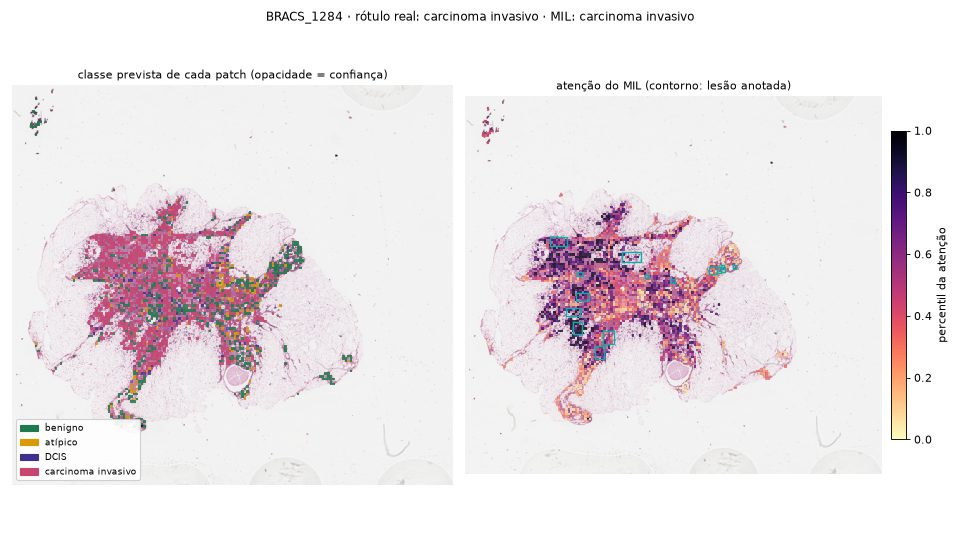
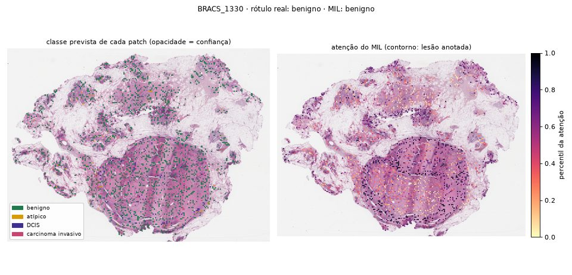
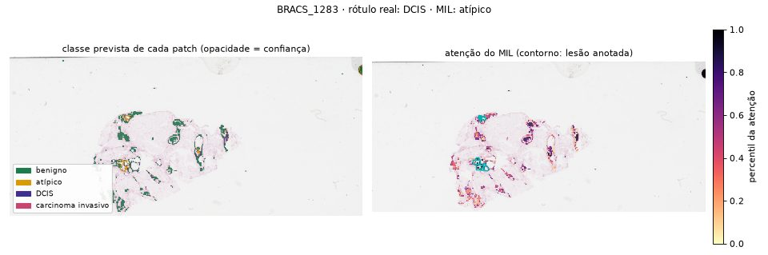
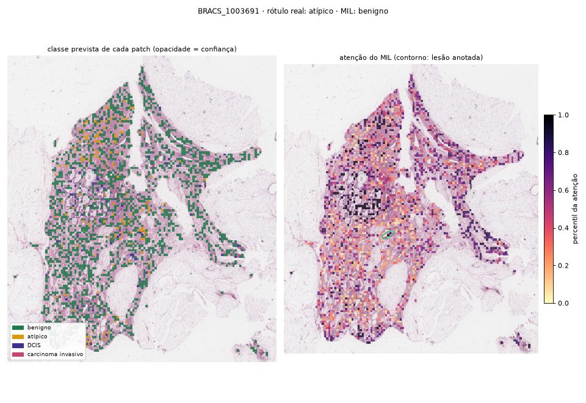
| Benigno | Atípico | DCIS | IC | Total | Critério | |
|---|---|---|---|---|---|---|
| Modelo de linguagem decide (E0) | 1/20 | 1/17 | 8/8 | 7/12 | 17/57 | referência |
| Regra de proporção (22/10) | 7/20 | 5/17 | 0/8 | 7/12 | 19/57 | não passou |
| Classificador | 7/20 | 3/17 | 3/8 | 11/12 | 24/57 | sem critério nesta versão |
| Classificador + negativos benignos | 10/20 | 6/17 | 2/8 | 11/12 | 29/57 | passou, por pouco |
| Hierárquico + negativos | 10/20 | 9/17 | 1/8 | 11/12 | 31/57 | sem critério |
Cada célula: lâminas certas / lâminas daquela classe (20 + 17 + 8 + 12 = 57). Linhas do modelo de linguagem e da regra de 22/10: as mesmas previsões, repontuadas com o rótulo oficial. Classificadores: refeitos com o rótulo oficial em 07/11. Intervalo de 95% do classificador com negativos: 0,40–0,63. O critério comparava com a versão de 06/11 repontuada (0,491).
O rótulo de uma lâmina do BRACS é o da lesão mais grave: numa lâmina benigna, nenhum patch é atípico nem maligno. Até 500 patches de cada uma das 34 lâminas benignas do treino (N, PB, UDH) entram no descritor como "benigno", sem usar os do mesmo paciente ao descrever uma lâmina.
Fração média de patches classificados como DCIS ou IC nas 20 lâminas benignas do teste. Por patch, nas regiões de validação: benigno 84% → 88%, maligno 90% → 87%.
passou| AUC | Limiar 0,5 | Sens. ≥ 0,90 no treino | |
|---|---|---|---|
| Maligno × resto | 0,83 | sens. 13/20, espec. 30/37 | sens. 20/20, espec. 0/37 |
| Suspeito (FEA, ADH, DCIS, IC) × benigno | 0,66 | sens. 26/37, espec. 10/20 | sens. 35/37, espec. 5/20 |
Critério: sensibilidade ≥ 0,90 e especificidade ≥ 0,40, com o limiar escolhido no treino. O maligno se separa bem do resto, mas o limiar do treino não transfere para o teste; dizer sempre "não maligno" já acerta 37/57. Lesões atípicas ocupam pouca área, e os números da lâmina inteira as diluem.
não passouQuando a maior probabilidade fica abaixo de um limiar escolhido no treino, a lâmina vai direto ao patologista.
| Lâminas | Acurácia balanceada | |
|---|---|---|
| Todas | 57 | 0,424 |
| Com decisão | 32 (56%) | 0,478 |
A curva de acerto por cobertura oscila entre 0,41 e 0,50, sem subir de forma regular: 57 lâminas são poucas para concluir.
passou, ganho pequenoComparação indicativa, não direta: o artigo do UNI testa nas 87 lâminas oficiais; aqui são 57 delas. Referência: Chen et al., Nature Medicine, 2024, Extended Data Table 19.
Hipótese vinda dos mapas de calor abaixo: numa lesão, os patches suspeitos formam um foco; numa lâmina benigna, os falsos positivos ficam espalhados. Quatro números a mais por lâmina, com os 8 vizinhos mais próximos de cada patch: o agrupamento dos suspeitos, dos malignos e dos atípicos, e a fração de suspeitos em foco.
| Benigno × atípico (37 lâminas) | AUC |
|---|---|
| 12 atributos | 0,58 |
| 12 + 4 espaciais | 0,61 |
Critério: ganho de pelo menos 0,05 e AUC de pelo menos 0,70. A hipótese não se sustentou: nas lâminas benignas, os suspeitos também ficam agrupados, cerca de 4 vezes acima do acaso, quase como nas atípicas (4,5). Os falsos positivos vêm em regiões inteiras que o descritor confunde, e os dois mapas que sugeriram a ideia não representavam o conjunto.
não passouQuando o classificador não separa benigno de atípico, responde "benigno ou atípico" em vez de chutar. Medem-se juntos o acerto do conjunto (a classe real está na resposta?) e as respostas exatas (uma classe só), para o recuo não virar resposta vaga sempre.
| Nas 57 lâminas | Acerto do conjunto | Respostas exatas |
|---|---|---|
| Sem recuo (3 classes) | 0,53 | 1,00 |
| Com recuo | 0,70 | 0,44 |
Critério: acerto do conjunto ≥ 0,75 e respostas exatas ≥ 0,50. A margem de recuo, escolhida no treino, ficou no máximo, e a resposta virou quase "maligno × não maligno": 26 das 37 benignas e atípicas recebem "benigno ou atípico"; 6 de 20 malignas também.
não passouPrimeira lâmina de cada classe real do teste, sem escolha por acerto. Esquerda: classe prevista de cada patch. Direita: probabilidade de não ser benigno. Só 2.000 patches de cada lâmina foram classificados, por isso o aspecto pontilhado. Descritor das regiões, sem os negativos, e classificador da lâmina de 06/11 (agrupamento antigo); os rótulos reais das quatro lâminas não mudam com a correção.
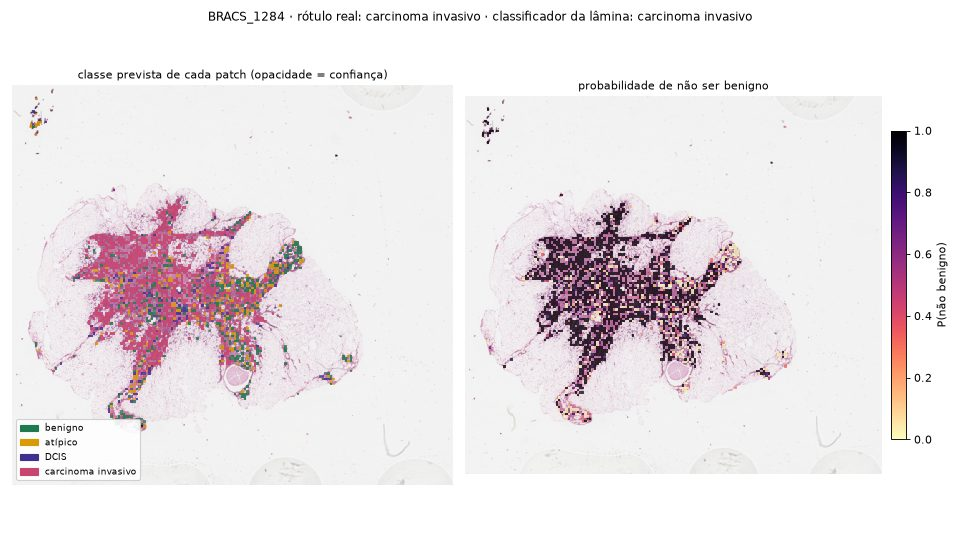
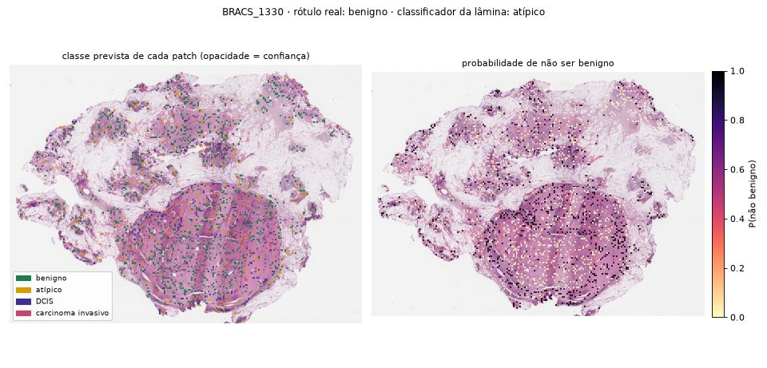
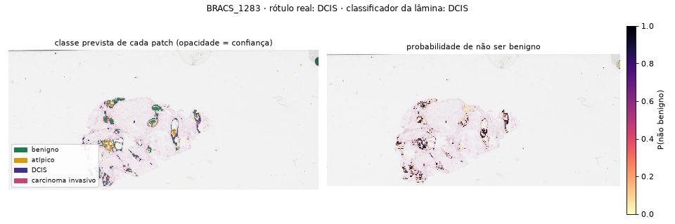
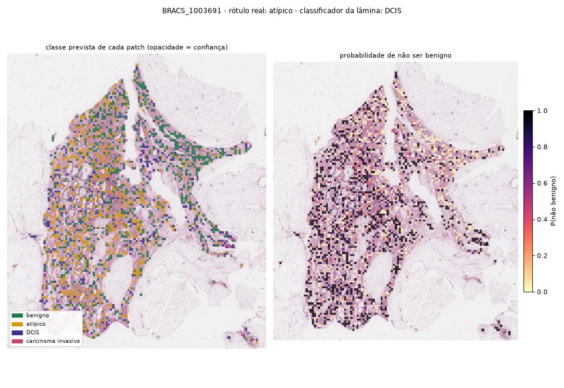
Classe sugerida pelo classificador: benigno Probabilidades: benigno 0.40, atípico 0.33, DCIS 0.15, carcinoma invasivo 0.12 Confiança: baixa Proporção entre os 2000 patches: benigno 73.3% · atípico 13.9% DCIS 8.0% · carcinoma invasivo 4.8% Regiões a conferir: [3584,59904] ductal carcinoma in situ 1.00 [4096,62464] invasive carcinoma 1.00 [43008,56832] atypical epithelial lesion
Junta os 32 textos num único prompt, com as contagens por categoria e as imagens de 3 patches âncora.
Patches analisados: 32 Patches por categoria: benigno 0, atipico 0, maligno 32 - ductal carcinoma in situ: 26/32 (81%) - invasive carcinoma: 6/32 (19%) Componente invasivo: PRESENTE (3 patches, P ≥ 0,90)
Na prática, um componente invasivo define o diagnóstico mesmo sendo minoria dos patches. Sem essa regra, o modelo de linguagem seguia a maioria. Com ela, o prompt diz se há componente invasivo (pelo menos 2 patches de carcinoma invasivo com probabilidade ≥ 0,90) e lembra que ele define o diagnóstico.
Patches analisados: 32 Patches por categoria: benigno 30, atipico 2, maligno 0 - benign tissue: 30/32 patches (94%) - atypical epithelial lesion: 2/32 patches (6%) Componente invasivo: não detectado (critério: ≥ 2 patches com invasive carcinoma e probabilidade ≥ 0.90; encontrados 0).
Um modelo de linguagem local (Gemma 3 4B, via Ollama) lê o prompt e as imagens e escreve o rascunho, com impressão diagnóstica, grau de confiança, regiões para revisão e limitações. O rótulo real nunca vai para o modelo.
| Benigno | Atípico | DCIS | IC | Total | |
|---|---|---|---|---|---|
| Sem a regra | 1/6 | 0/4 | 1/1 | 3/4 | 5/15 |
| Com a regra | 4/6 | 0/4 | 1/1 | 4/4 | 9/15 |
Cada célula: lâminas certas / lâminas daquela classe, com o rótulo oficial. O total é a soma das colunas.
passou: IC 3 → 4 de 4; benignas 1 → 4 de 6| Benigno | Atípico | DCIS | IC | Total | |
|---|---|---|---|---|---|
| Sem a regra | 1/20 | 1/17 | 7/8 | 5/12 | 14/57 |
| Com a regra | 1/20 | 1/17 | 8/8 | 7/12 | 17/57 |
| Respostas malignas | 55/57 | ||||
Cada célula: lâminas certas / lâminas daquela classe, com o rótulo oficial (20 + 17 + 8 + 12 = 57). Com a regra: 1 + 1 + 8 + 7 = 17 certas.
A regra ajuda no carcinoma invasivo (5 → 7 de 12), mas a pipeline chama de maligno 55 das 57 lâminas. O ganho nas benignas visto no desenvolvimento não se repetiu. O problema vem antes do modelo de linguagem: o roteador busca o que parece suspeito e o descritor quase nunca diz "atípico".
A classe passa a vir do classificador da lâmina, e o modelo recebe campos fixos: classe, probabilidades, confiança, proporções e regiões. Uma checagem automática confere o texto: a classe é a sugerida? Os números e as coordenadas citados existem na evidência? A comparação é com os 57 pré-laudos antigos.
| Só redige (novo) | Modelo decide (antigo) | |
|---|---|---|
| Classe do texto igual à sugerida | 57/57 | — |
| Números sem sustentação | 0 de 791 | 11 de 523 (2,1%) |
| Coordenadas inventadas | 0 de 175 | 2 de 178 |
57 lâminas do teste. A checagem não detecta achados morfológicos inventados; na leitura de 3 textos, não houve nenhum. O texto quase só reorganiza os campos. A classe veio do classificador de 06/11 (agrupamento antigo).
passouA classe e a confiança vêm do MIL; as regiões citadas são os 3 patches de maior atenção, os que mais pesaram na decisão, cada um com a descrição do descritor. O modelo de linguagem só redige.
| 57 pré-laudos | Com o MIL | Modelo decide (antigo) |
|---|---|---|
| Classe do texto igual à sugerida | 57/57 | — |
| Números sem sustentação | 0 de 791 | 11 de 523 |
| Coordenadas inventadas | 0 de 267 | 2 de 178 |
| Classe final certa | 38/57 | 17/57 |
| Regiões citadas dentro da lesão anotada | 18 de 93 | 7 de 93 (descritor) |
Passou no critério fixado antes (classe igual em ≥ 90% e números sem sustentação não maiores que nos antigos). Regiões dentro da lesão: lâminas atípicas, DCIS e IC com anotação; as anotações cobrem só ~2% dos patches.
passouProblema que a checagem automática não pega: em 15 lâminas, o MIL sugere benigno, mas regiões de maior atenção são descritas pelo descritor como atípicas ou malignas. Só 1 dos 15 textos aponta a contradição; os outros a justificam. Exemplo (BRACS_1003691, atípica):
Benigno [...] A presença de um patch de ductal carcinoma in situ (1.00) com alta probabilidade (0.99) influenciou a sugestão de benignidade.
Os números estão todos certos, mas o raciocínio não: um patch de DCIS não sustenta benignidade. Isso reforça a leitura dos textos por patologista e pede uma regra nos campos que sinalize a contradição.
## Impressão diagnóstica sugerida Moderada. A alta prevalência de DCIS (84%) sugere uma avaliação mais aprofundada para determinar o grau e a extensão da doença. A presença de patches com categorias de "atípico" e "invasivo carcinoma" requer investigação adicional. ## Regiões para revisão prioritária [99840,17408] – Patch com alta probabilidade de DCIS (1.00). [117248,24064] – Patch com alta probabilidade de DCIS (1.00). Classificação extraída: DCIS
## Impressão diagnóstica sugerida Baixo (devido à predominância de tecido benigno e à baixa probabilidade da lesão atípica). A evidência atual não suporta a presença de carcinoma invasivo. ## Regiões para revisão prioritária [59392,52736] - Probabilidade de 0.97 para lesão epitelial atípica, necessita de avaliação mais detalhada. Classificação extraída: benigno
## Impressão diagnóstica sugerida Baixo (6% de patches atípicos) – A predominância de tecido benigno sugere uma avaliação de lesão benigna. A presença de duas lesões atípicas requer investigação adicional. Classificação extraída: DCIS ← não bate com o texto
| Estágio | Situação | Próximo passo |
|---|---|---|
| 1. Filtro de tecido | resolvido | — |
| 2. Roteador | bom em lâminas malignas | métrica para lâminas benignas e atípicas |
| 3. Descritor | bom no DCIS × IC; negativos cortam falsos malignos; atípico ainda fraco | recuperar o DCIS sem perder as benignas |
| 3½. Decisão da lâmina | MIL com 79 lâminas: 38/57, acurácia balanceada 0,63; benigno × atípico AUC 0,78 | MIL com as 379 lâminas de treino; mapas de atenção; confirmar nas 30 lâminas de teste não usadas |
| 4. Agregação | regra ajuda no IC | trocar a contagem dos 32 patches pelos campos fixos |
| 5. Síntese | só redige, com a classe do MIL; números fiéis, mas justifica contradições em vez de apontá-las | sinalizar contradições nos campos; avaliação por patologista |
Ressalvas gerais: 2 lâminas por classe no desenvolvimento; as anotações do BRACS marcam regiões, não cada célula; o rótulo da lâmina é o da lesão mais grave.